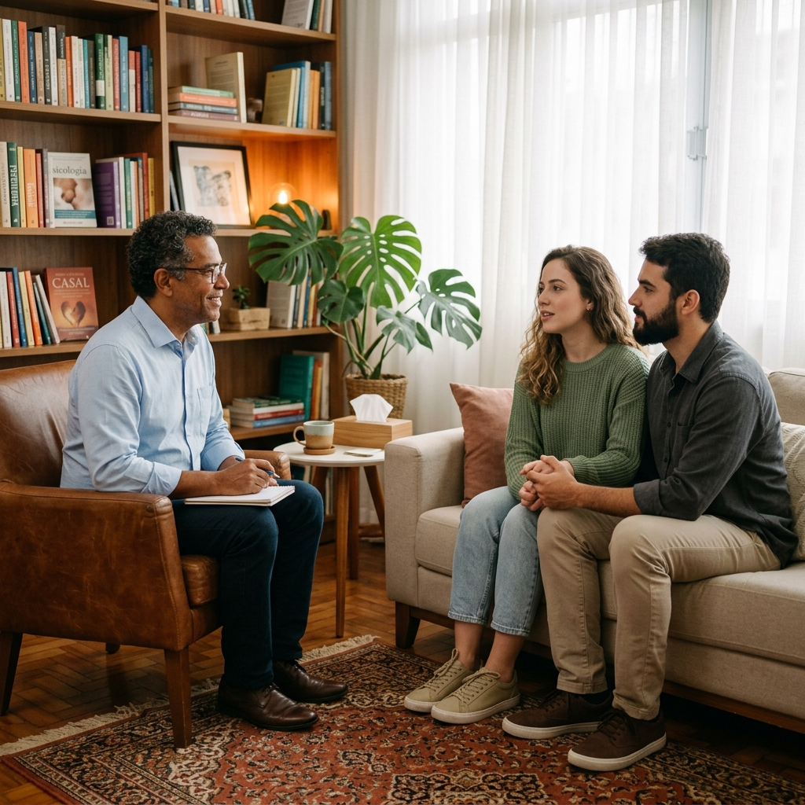
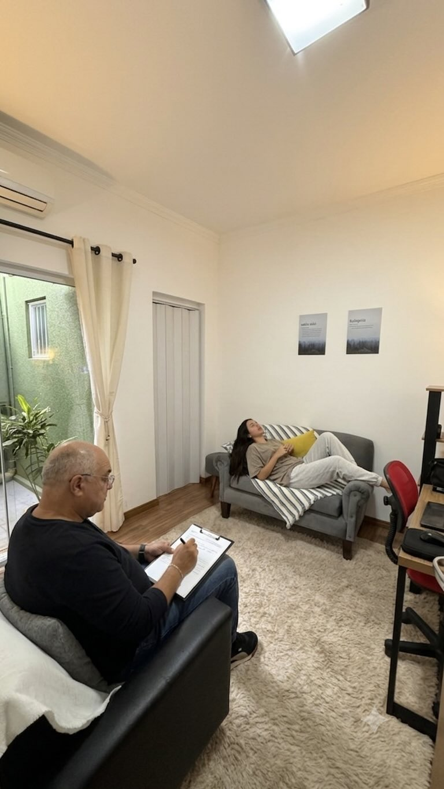

01
Terapia Individual
Um espaço reservado para compreender o que você está vivendo e buscar novos caminhos com acompanhamento e acolhimento.
Um espaço de escuta, acolhimento e orientação, onde o conhecimento terapêutico é integrado aos princípios e valores da fé católica.

Acredito que cada pessoa possui uma história única. Por isso, o processo terapêutico deve respeitar sua realidade, seus sentimentos, seus valores e sua dimensão espiritual.
Atendimento pensado para acolher diferentes momentos e necessidades da vida.
Um espaço reservado para compreender o que você está vivendo e buscar novos caminhos com acompanhamento e acolhimento.
Um espaço para o casal compreender seus conflitos, melhorar a comunicação e buscar caminhos para a restauração do relacionamento.
O sentido da minha vida é ajudar você a encontrar um sentido para a sua.— Paulo Sérgio Ramão

As sessões podem acontecer online, através de Google Meet, WhatsApp ou FaceTime, a partir de sua casa ou em um local tranquilo e privado.
Também há atendimento presencial em Assis/SP, em um ambiente discreto, privativo e aconchegante.
Atendimento à distância com privacidade e conforto.
Atendimento em Assis/SP, em sala acolhedora e reservada.
Atendimento à noite e aos sábados.
Meu nome é Paulo Sérgio Ramão, casado com a Denise há 30 anos, pai de quatro filhos — Gisele e Pedro (estes dois já no Céu), Caio e Maria Eduarda — e avô da Clara.
Sou graduado em Administração e pós-graduado em Docência do Ensino Superior e em Banco de Dados. Tenho formação livre em Teologia, Aconselhamento e Psicanálise.
Sou católico apostólico romano, consagrado a Nossa Senhora e membro da Comunidade de Aliança Restauração, reconhecida pela Igreja Católica Apostólica Romana, na cidade e diocese de Assis/SP.
Semanalmente, voluntariamente, já há 14 anos, conduzo momentos de espiritualidade e presto atendimento de escuta, aconselhamento, direcionamento espiritual e orações de cura interior e de libertação.
"Deus só permite o mal porque saberá extrair dele um bem muito
melhor e elevado."
Um primeiro encontro de 30 minutos, gratuito, para acolhimento, compreensão e esclarecimento das suas dúvidas. Sem compromisso.
A partir das suas necessidades, expectativas e momento de vida, buscamos compreender juntos o melhor caminho a seguir.
As sessões seguintes têm duração de aproximadamente 50 minutos e podem ocorrer semanal ou quinzenalmente, conforme sua evolução.
Caso não encontre a resposta que procura, entre em contato. Será um prazer conversar com você.
Falar comigo →Não só pode como deve. A saúde mental de uma pessoa é fundamental para que viva uma espiritualidade plena e verdadeira.
O Papa Francisco disse certa vez em entrevista que ele mesmo procurou apoio terapêutico durante um tempo de sua vida.
A primeira sessão tem duração de 30 minutos e é um momento de acolhimento e compreensão, onde você poderá falar sobre o que está vivendo, suas expectativas e tirar dúvidas — sem custo.
As demais sessões têm duração de 50 minutos, com frequência semanal ou quinzenal, conforme a necessidade e evolução.
O processo terapêutico é personalizado e varia de acordo com a necessidade, compromisso e evolução de cada pessoa. Não há um número fixo — o ritmo é determinado em conjunto.
O pagamento das sessões é feito previamente, normalmente via Pix. Outras formas de pagamento poderão ser combinadas diretamente.
Sim. O ambiente digital permite a mesma profundidade de escuta e acolhimento. O importante é que você esteja em um local tranquilo, privado e confortável no momento da sessão.
Entre em contato para tirar suas dúvidas e agendar uma conversa inicial gratuita, sem compromisso.
Conversar pelo WhatsApp